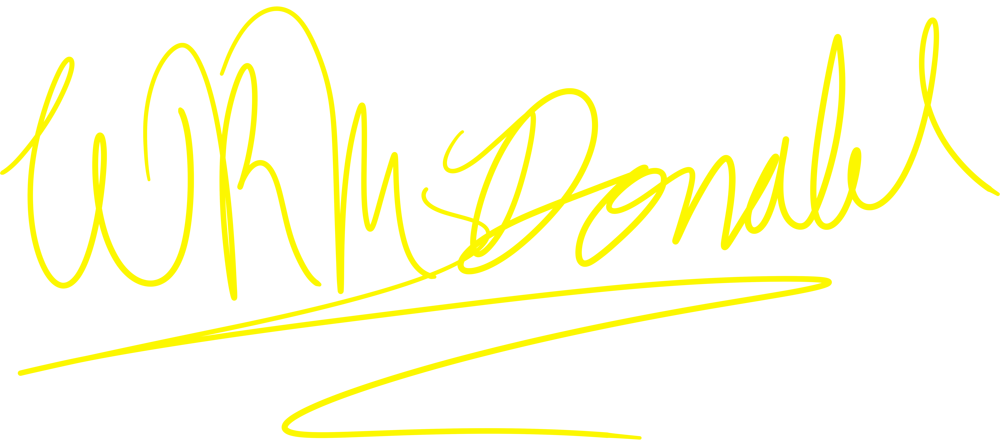
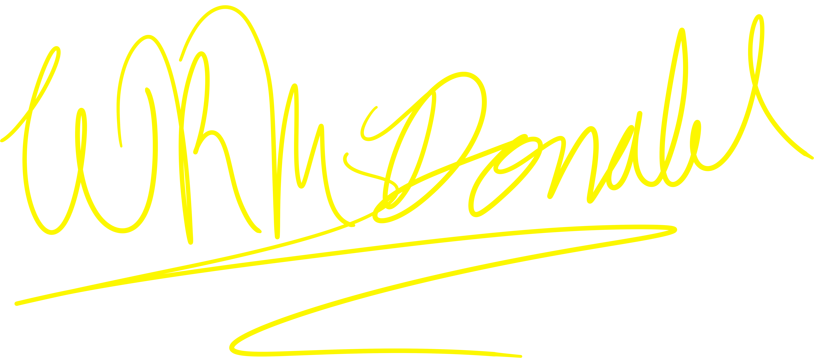

I.T. Student, Programmer, Graphic Designer, and
Aspiring Game Dev.
Hello, There! I'm RYAN MCDONALD. I've been "coding", if you could even call my early days of "this" coding, since I was around ~10-11. If you want to skip straight to the good stuff, you can click the button below. Or, if you would rather have an indepth idea of my background, you can scroll down. Your choice, choom. Also, if you can't already tell, if you aren't a game freak, this page is inspired by one of my favorite games, Cyberpunk 2077.